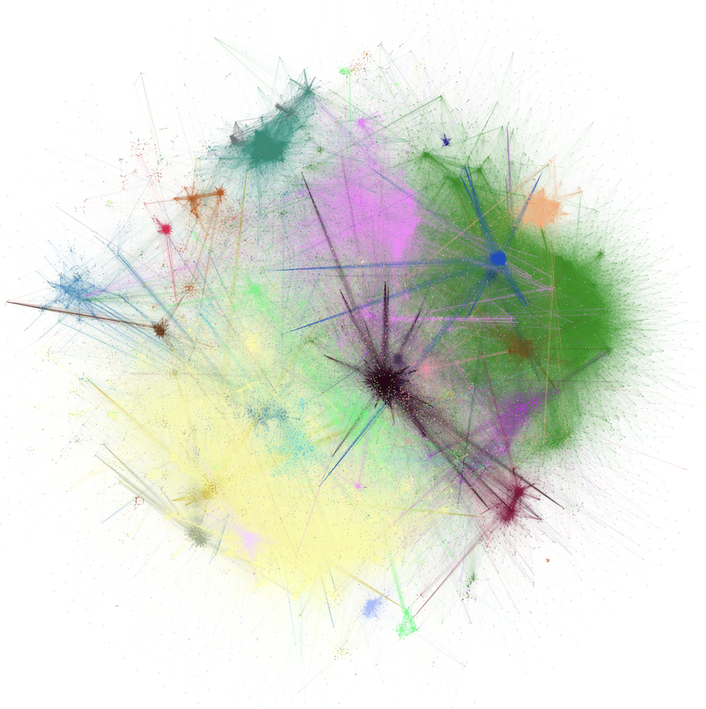

Network Science: Models, Mathematics, and Computation
Welcome
This is a set of notes developed for an undergraduate course in network science. The target audience for these notes are undergraduates in mathematics and computer science who have completed courses in linear algebra, discrete mathematics, and programming.

These notes are a collaborative project by Dr. Heather Zinn Brooks (Department of Mathematics, Harvey Mudd College) and Dr. Phil Chodrow (Department of Computer Science, Middlebury College).
Pedagogical Features
These notes are explicitly designed for undergraduate instruction with students who are interested in and fluent in both mathematics and computation. For this reason:
- Computational examples are integrated into the text and shown throughout.
- Live versions of lecture notes are supplied as Jupyter Notebooks which can be opened in Google Colab. Certain code components have been removed. The purpose is to facilitate live-coding in lectures.
Source Text
The notes draw on a variety of sources which are noted in the References section of each page. We designed the overall sequence of notes to align with a course that uses Newman (2018) as a primary text.
Use and Reuse
These notes are free to reuse and adapt for educational purposes. Attribution is appreciated. If you do use our notes in an educational context, we’d love to hear about your experience!
Feedback
We love feedback and suggestions on how to improve these materials. Please email us at our respective email addresses (available from our professional websites linked above).
Acknowledgements
This site was generated using the Quarto publishing system. It is hosted on GitHub and published via GitHub Pages. We thank Mason Porter for inspiration in earlier versions of this course.
We thank the National Science Foundation’s Division of Applied Mathematics for support to both HZB (grant DMS-2109239) and PSC (grant DMS-2407058).
References
© Heather Zinn Brooks and Phil Chodrow, 2025